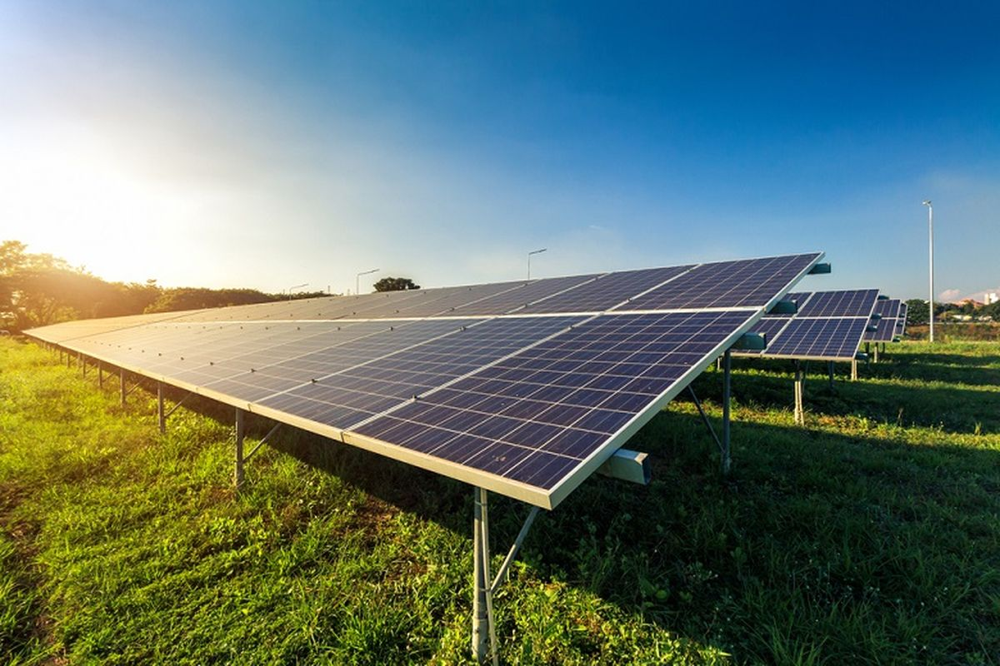
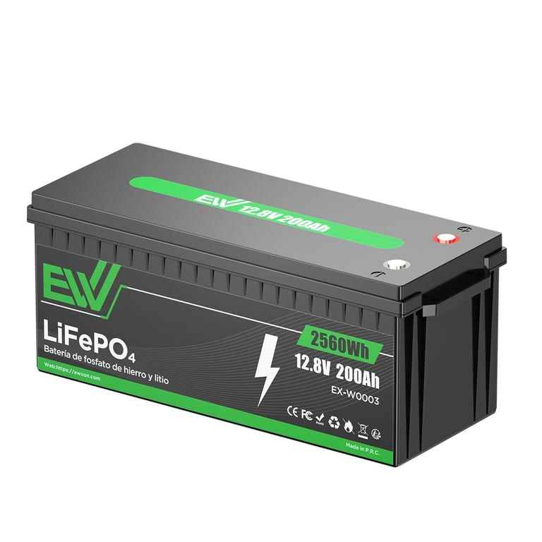
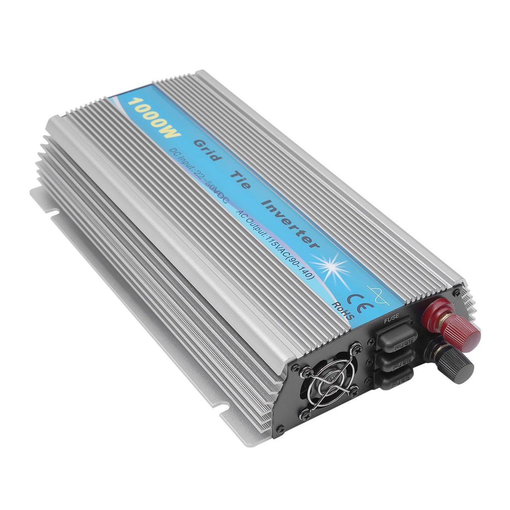
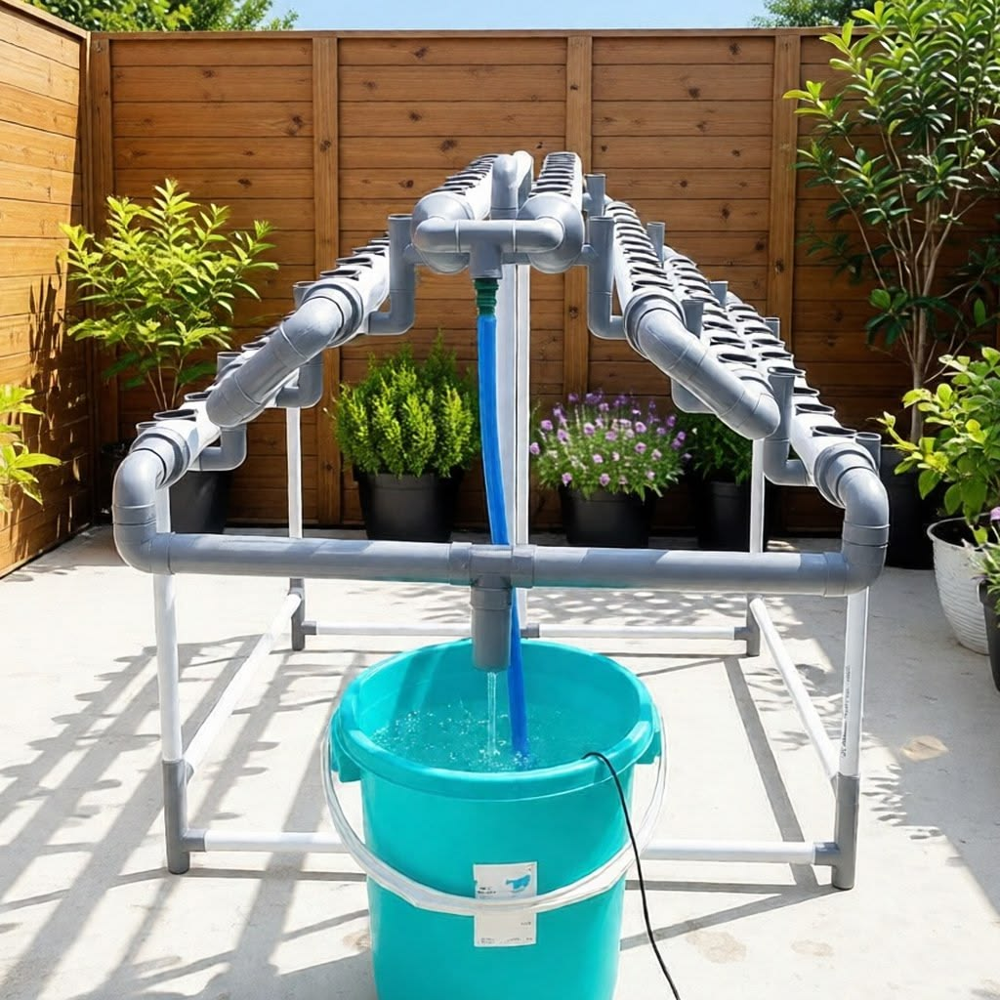

SOP Budidaya Hidroponik
Pilih menu nomor SOP di bawah ini untuk melihat rincian panduan operasional harian:
1. Jadwal Pemberian Nutrisi
Pemberian nutrisi dilakukan setiap hari dengan memantau pH, TDS/EC dan volume larutan pada tandon secara rutin.
| Waktu | Kegiatan | Parameter Nutrisi | Keterangan |
|---|---|---|---|
| Pagi (07.00–08.00) |
Cek volume air dan tambahkan nutrisi AB Mix | pH 5,5 – 6,5 TDS/EC 1,0 – 1,6 mS/cm |
Pastikan volume larutan sesuai dan nutrisi tercampur merata. |
| Siang (12.00–13.00) |
Cek dan catat pH serta TDS/EC | pH 5,5 – 6,5 TDS/EC 1,0 – 1,6 mS/cm |
Lakukan penyesuaian jika di luar rentang ideal. |
| Sore (17.00–18.00) |
Tambah air bersih jika volume berkurang | pH 5,5 – 6,5 TDS/EC 1,0 – 1,6 mS/cm |
Jaga kestabilan konsentrasi nutrisi. |
- Gunakan nutrisi AB Mix sesuai dosis rekomendasi.
- Parameter pH dan TDS/EC disesuaikan dengan jenis tanaman.
- Catat hasil pengukuran pada log harian.

2. Prosedur Pemberian Nutrisi
Langkah-langkah baku pencampuran dan pemeriksaan nutrisi sebelum dialirkan ke instalasi:
Cek Volume Air
Cek volume air pada tandon nutrisi sebelum pencampuran.
Tambahkan AB Mix
Tambahkan nutrisi AB Mix sesuai dosis (5 ml/liter masing-masing).
Aduk Hingga Merata
Aduk hingga larutan tercampur merata secara homogen.
Ukur & Sesuaikan pH
Ukur dan sesuaikan pH larutan pada kisaran 5,5 – 6,5.
Ukur & Sesuaikan TDS/EC
Ukur dan sesuaikan TDS/EC pada kisaran 1,0 – 1,6 mS/cm.
Catat Log Harian
Catat hasil pengukuran akhir pada log harian.
3. Pembersihan Pipa dan Instalasi
Pembersihan dilakukan secara rutin untuk mencegah penyumbatan, pertumbuhan alga, dan menjaga aliran nutrisi tetap optimal.
- Matikan Pompa: Matikan pompa dan kosongkan sisa larutan nutrisi pada pipa.
- Sikat Pipa: Bersihkan bagian dalam pipa menggunakan sikat halus dan air bersih untuk menghilangkan lumut/kotoran.
- Bilas Pipa: Bilas pipa dengan air bersih hingga kotoran dan lumut terangkat.
- Pasang Kembali: Pasang kembali pipa dan pastikan tidak ada kebocoran.
- Uji Aliran: Nyalakan pompa dan pastikan aliran nutrisi berjalan lancar.
Jadwal Pembersihan:
- Pipa dan instalasi: 1 minggu sekali
- Tandon nutrisi: 2 minggu sekali
- Filter pompa: 2 minggu sekali
4. Manajemen Energi (PLTS)
Pengelolaan energi dilakukan untuk memastikan operasional pompa dan sistem IoT berjalan stabil dan berkelanjutan.

1. Panel Surya
Pastikan panel surya bersih dan tidak terhalang bayangan.

2. Solar Charge Controller
Cek indikator tegangan & pengisian baterai (misal 13.2 V).

3. Kondisi Baterai
Pastikan baterai terisi dengan baik (12 – 13,5 V).

4. Inverter Daya
Cek inverter dan pastikan bekerja normal.

5. Pompa & Perangkat IoT
Pastikan beroperasi 24 jam menggunakan energi PLTS.
5. Flow Chart Kegiatan Harian
Urutan pemeriksaan harian operasional hidroponik:
6. Log Pemantauan Harian
Tabel pencatatan rutin parameter lapangan:
| Tanggal | Vol Air (L) | Nutrisi (ml/L) | pH | TDS/EC |
|---|---|---|---|---|
| [ Form Tabel Pencatatan Harian ] | ||||
Indikator Keberhasilan
Tolok ukur keberhasilan operasional sistem:
- pH stabil pada 5,5 – 6,5
- TDS/EC stabil pada 1,0 – 1,6 mS/cm
- Aliran nutrisi lancar 24 jam
- Instalasi bersih dan bebas penyumbatan
- Sistem PLTS berfungsi optimal
- Tanaman tumbuh sehat dan produktif